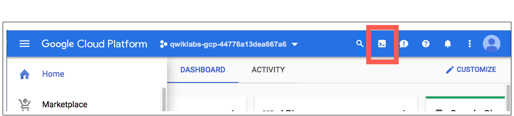

Cloud Shell, çok sayıda geliştirme aracı içeren bir sanal makinedir. 5 GB boyutunda kalıcı bir ana dizin sunar ve Google Cloud üzerinde çalışır. Cloud Shell, Google Cloud kaynaklarınıza komut satırı erişimi sağlar.
Cloud Console'da, sağ üstteki araç çubuğunda Cloud Shell'i Etkinleştir düğmesini tıklayın.

Devam'ı tıklayın.
Birkaç saniye içinde ortam sağlanır ve bağlantı kurulur. Bağlandığınızda kimliğiniz zaten doğrulanmıştır. Proje ise PROJECT_ID'nize göre ayarlanmıştır. Örneğin:

gcloud, Google Cloud'un komut satırı aracıdır. Cloud Shell'e önceden yüklenmiştir ve sekme ile tamamlamayı destekler.
Etkin hesap adını şu komutla listeleyebilirsiniz:
gcloud auth list
(Çıkış)
Credentialed accounts:
- <hesabım>@<alanım>.com (active)
(Örnek çıkış)
Credentialed accounts:
- google1623327_student@qwiklabs.net
Proje kimliğini şu komutla listeleyebilirsiniz:
gcloud config list project
(Çıkış)
[core]
project = <project_ID>
(Örnek çıkış)
[core]
project = qwiklabs-gcp-44776a13dea667a6